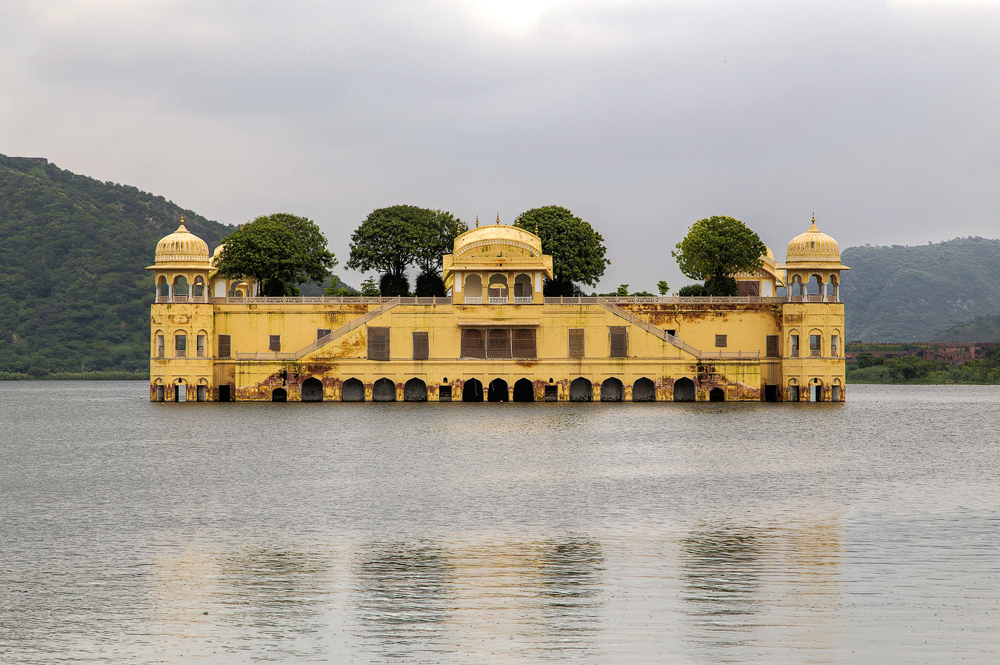
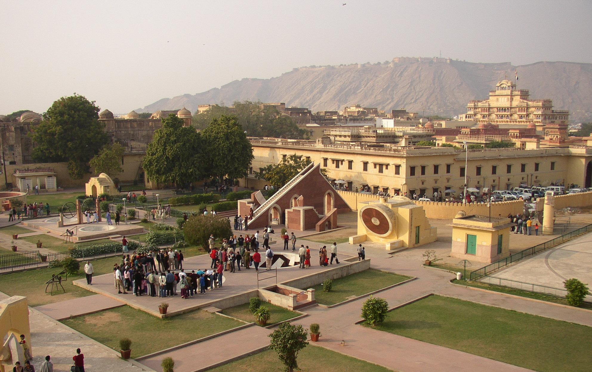

-
Albert Hall Museum

The Albert Hall Museum in Jaipur is the oldest museum of the state and functions as the state museum of Rajasthan, India. The building is situated in Ram Niwas garden outside the city wall opposite New gate and is a fine example of Indo-Saracenic architecture. It is also called the Government Central Museum.
-
Hawa Mahal

Jaigarh Fort is situated on the promontory called the Cheel ka Teela (Hill of Eagles) of the Aravalli range; it overlooks the Amer Fort and the Maota Lake, near Amer in Jaipur, Rajasthan, India.[1][2] The fort was built by Jai Singh II in 1726 to protect the Amer Fort and its palace complex and was named after him.
-
jal Mahal
Jal Mahal (meaning "Water Palace") is a palace in the middle of the Man Sagar Lake in Jaipur city, the capital of the state of Rajasthan, India
-
Amer Fort
.jpg)
Amer Fort or Amber Fort is a fort located in Amer, Rajasthan, India. Amer is a town with an area of 4 square kilometres (1.5 sq mi)[1] located 11 kilometres (6.8 mi) from Jaipur, the capital of Rajasthan.
-
Jantar Mantar
The Jantar Mantar is an equinoctial sundial, consisting of a gigantic triangular gnomon with the hypotenuse parallel to the Earth's axis. On either side of the gnomon is a quadrant of a circle, parallel to the plane of the equator. The instrument is intended to measure the time of day, correct to half a second and declination of the Sun and the other heavenly bodies.
-
Jaugarh Fort

Jaigarh Fort is situated on the promontory called the Cheel ka Teela (Hill of Eagles) of the Aravalli range; it overlooks the Amer Fort and the Maota Lake, near Amer in Jaipur, Rajasthan, India. The fort was built by Jai Singh II in 1726 to protect the Amer Fort and its palace complex and was named after him.